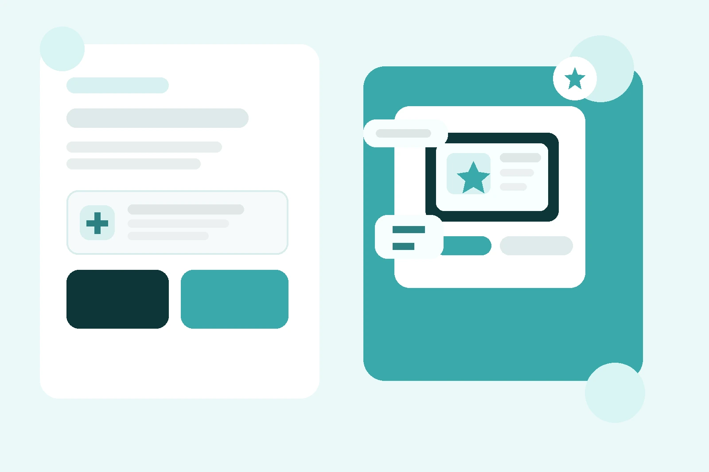
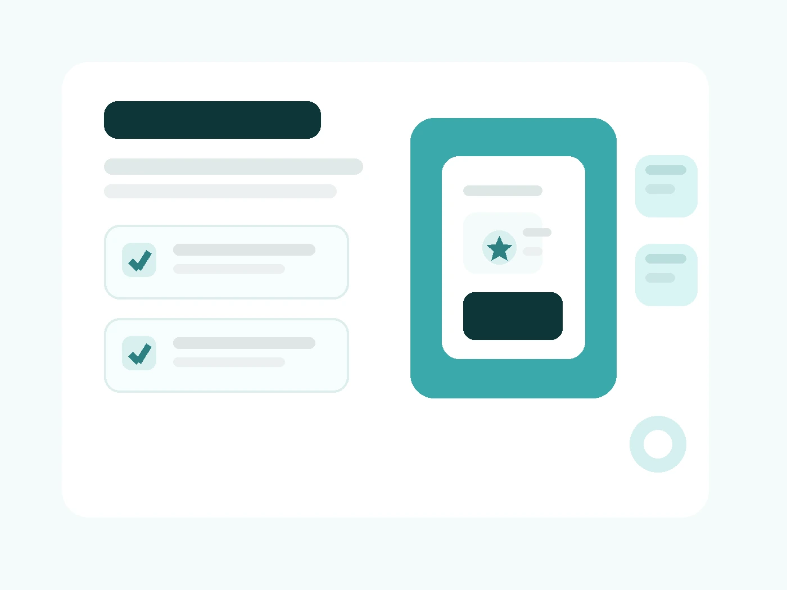

Para ganar fluidez, confianza y naturalidad.
Clases de alemán online personalizadas
Servicios de alemán online para hablar, aprobar y avanzar con propósito
Trabajo contigo de forma individual para que el alemán encaje con un objetivo real: hablar con más soltura, preparar Goethe o TELC, mejorar tus opciones laborales o reforzar el alemán escolar con un método claro.
Clases 1 a 1
Plan personalizado
Online desde Fuengirola

Con estrategia, formato y práctica enfocada.
Idioma, entrevistas y enfoque laboral real.
Apoyo visual, cercano y adaptado al alumno.
Elige el servicio según tu objetivo, no según una etiqueta genérica
No todas las clases de alemán sirven para lo mismo. Aquí tienes una distribución más clara para ver rápido qué tipo de acompañamiento encaja contigo y qué resultado puedes esperar de cada bloque.
Sprechen
Alemán conversacional
Ideal si ya tienes base y quieres dejar de sonar “de libro”. Aquí trabajamos soltura, naturalidad, reacción oral y seguridad para comunicarte en situaciones reales o en la parte oral de un examen.
- mantener y pulir tu nivel sin oxidarte
- hablar con más naturalidad y menos bloqueo
- mejorar defensa oral en contextos cotidianos o de examen
Goethe · TELC
Preparación de exámenes oficiales
Aquí no solo aprendes alemán: aprendes a rendir bien en examen. Trabajamos formato, estrategia, tiempos, destrezas y errores típicos para que llegues con más control a la prueba.
- preparación específica para Goethe, TELC y otros modelos
- trabajo por destrezas y nivel real
- técnicas para resolver ejercicios con criterio
Laboral
Alemán para trabajar en Alemania
Si tu meta es laboral, la preparación tiene que ser práctica. Te ayudo a construir un alemán útil para entrevistas, entorno profesional y acceso real a mejores oportunidades en Alemania, Austria o Suiza.
- refuerzo del alemán necesario para trabajar con seguridad
- currículum y entrevistas en alemán
- acompañamiento según la fase en la que estés
Empresas
Alemán + coaching laboral para empresas
Servicio especializado para equipos que necesitan trabajar mejor con entornos alemanes. Se puede combinar idioma, vocabulario sectorial, cultura profesional y adaptación práctica al puesto.
- formación lingüística aplicada al puesto
- adaptación cultural y profesional
- contenido ajustado al sector de la empresa
Escolar
Alemán escolar
Si tu hijo estudia alemán en el colegio o está en un colegio alemán, necesita un apoyo que explique bien, conecte con su nivel y convierta la materia en algo menos cuesta arriba.
- refuerzo visual y explicaciones sencillas
- aprendizaje lúdico para conectar con alumnado joven
- apoyo para aprobar y mejorar resultados escolares
A medida
Plan personalizado de alemán online
Si tu situación no encaja exactamente en uno de estos bloques, diseñamos un plan a medida. La idea es que cada clase responda a una necesidad real y te acerque a un resultado concreto.
- objetivos definidos desde el principio
- adaptación al ritmo del alumno
- seguimiento y reajuste continuo
Qué incluyen mis clases de alemán online
La idea no es improvisar cada semana, sino avanzar con una estructura clara. Por eso mis clases combinan objetivo, materiales ajustados y feedback útil para que notes progreso de verdad.
- evaluación inicial y definición de objetivo
- materiales adaptados a tu nivel y necesidad
- seguimiento real del progreso
- corrección activa y feedback práctico
- estructura clara para no perder tiempo
